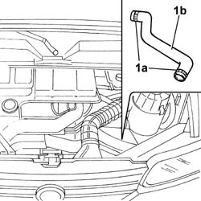
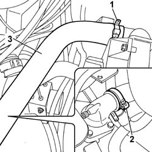
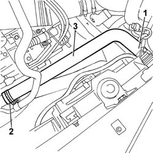

1088D14 UPPER SLEEVE FOR COOLANT INLET TO RADIATOR - R + R
- Path
- Procedures > 10 ENGINE UNIT > 1088 ENGINE COOLING > 1088D COOLANT HOSES AND SLEEVES > 1088D14 UPPER SLEEVE FOR COOLANT INLET TO RADIATOR - R + R
- Kind
- repair procedure (removal / refitting; the operation number is the code)
- Applies to
- all engines; all production periods
- Interactive page
- https://sloeber94.github.io/elrnDB-fDct/en/#/244000957
Applies to: engines: 2.8 JTD 8V; all production periods
 Removing
Removing
 Refitting
Refitting- Position a suitable container for collecting the engine coolant.
1. Oopen the retaining bands (1a) on the thermostat and on the radiator and detach the upper hose (1b).

Applies to: engines: 2.8 JTD 8V; all production periods
Refitting
Removing- Fit the hose on the thermostat and on the radiator.
- Renew the fastenings using the bands.
Applies to: engines: 2.0 JTD 8V; all production periods
Removing
Refitting- Position the vehicle on the lift.
Op. 7055B54 UNDER-ENGINE GUARD - R R
- Position a suitable container for collecting the coolant.
1. Disconnect the upper hose from the radiator.
2. Disconnect the upper hose from the thermostat.
3. Remove the radiator upper coolant inlet hose.

Applies to: engines: 2.0 JTD 8V; all production periods
Refitting
Removing- Fit the radiator upper coolant inlet hose.
- Connect the hose to the thermostat and to the radiator.
Applies to: engines: 2.3 JTD 16V; all production periods
Removing
RefittingOp. 7055B54 UNDER-ENGINE GUARD - R R
1. Disconnect the upper coolant sleeve from the radiator and drain the engine cooling system.
2. Disconnect the upper sleeve from its fitting on the rigid pipe.
3. Remove the upper coolant sleeve.

Applies to: engines: 2.3 JTD 16V; all production periods
Refitting
Removing- Fit the upper radiator hose.
- Connect the upper hose to the fitting on the rigid pipe.
- Connect the upper radiator hose.
Op. 0010T20 COOLANT CHECK DENSITY AND TOP UP IF NECESSARY
Applies to: engines: 2.0 16V; all production periods
Removing
RefittingOp. 7055B54 UNDER-ENGINE GUARD - R R
- Position a suitable container for collecting the coolant.
1. Open the retaining bands (1a) and remove the hose (1b) releasing it from the thermostat and from the radiator.
- Collect the coolant.
Applies to: engines: 2.0 16V; all production periods
Refitting
Removing- Fit the hose on the thermostat and the radiator and tighten the fastening bands.